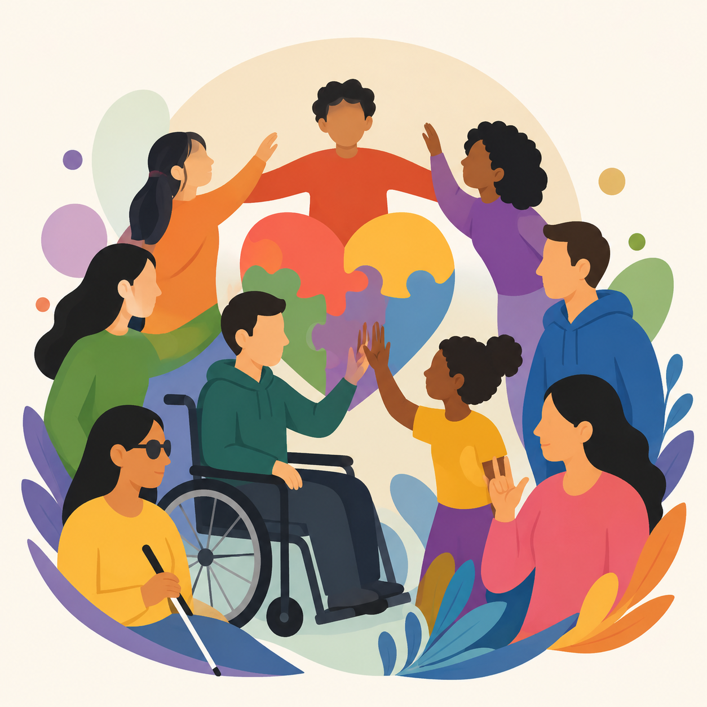
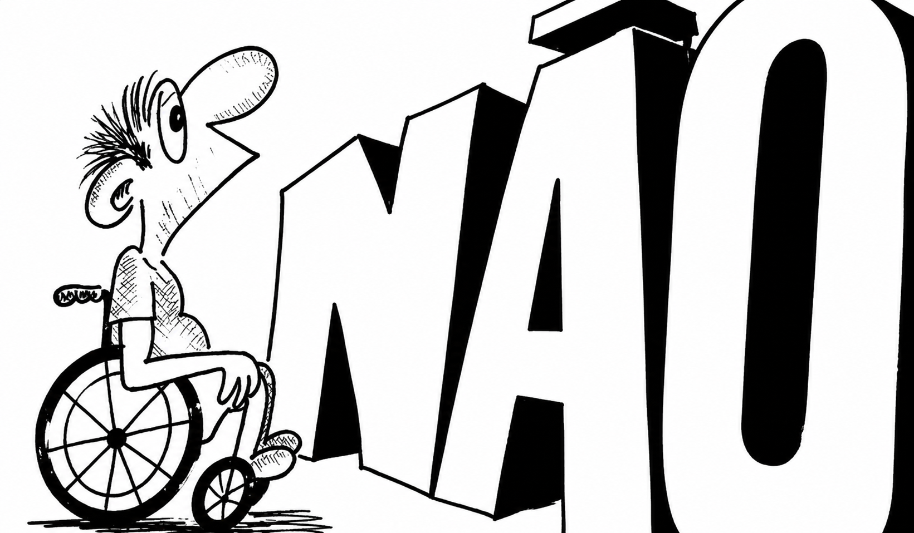
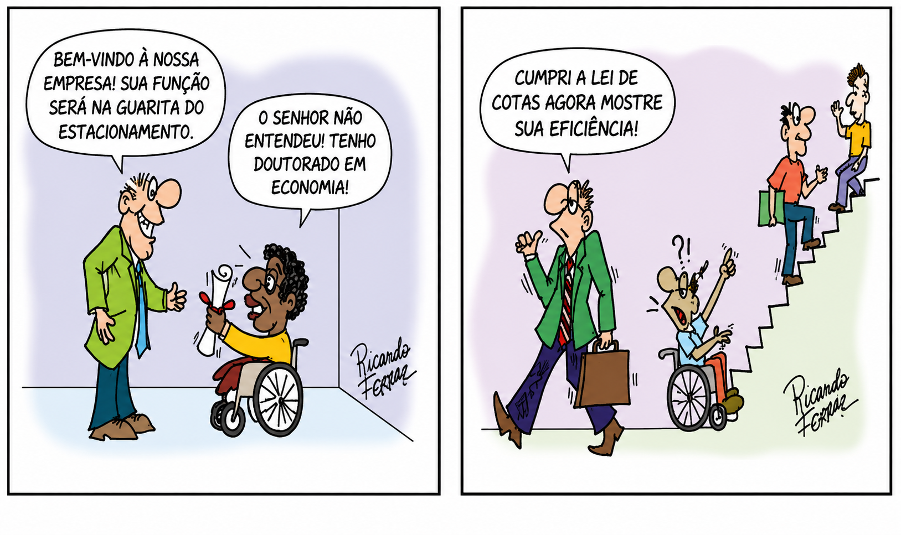
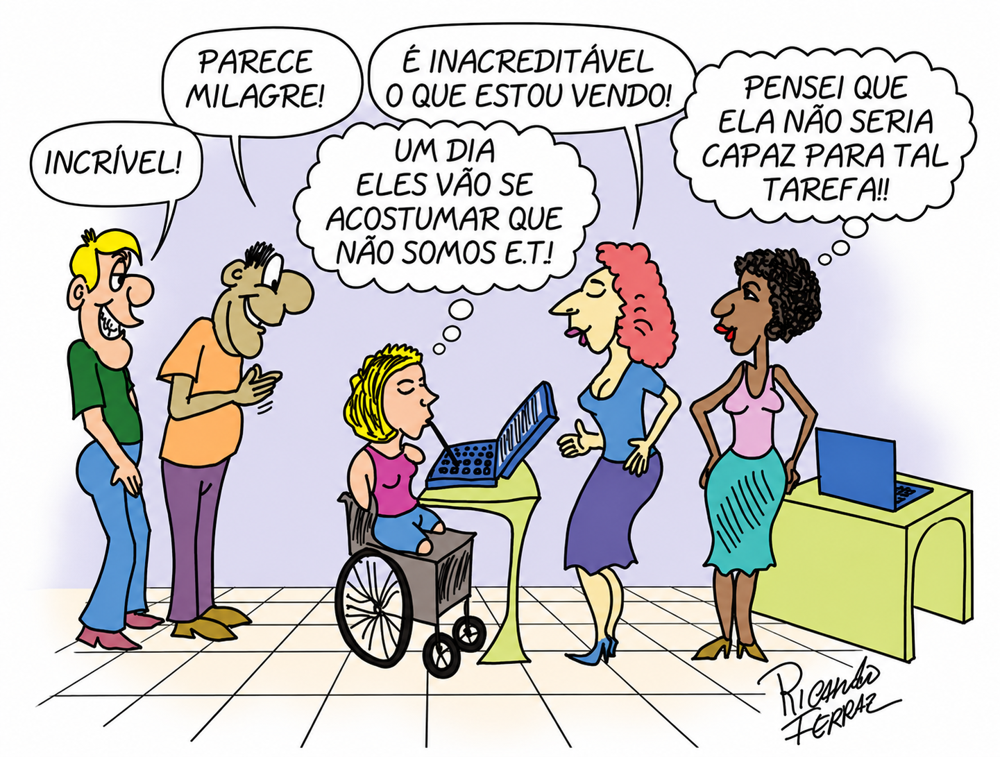
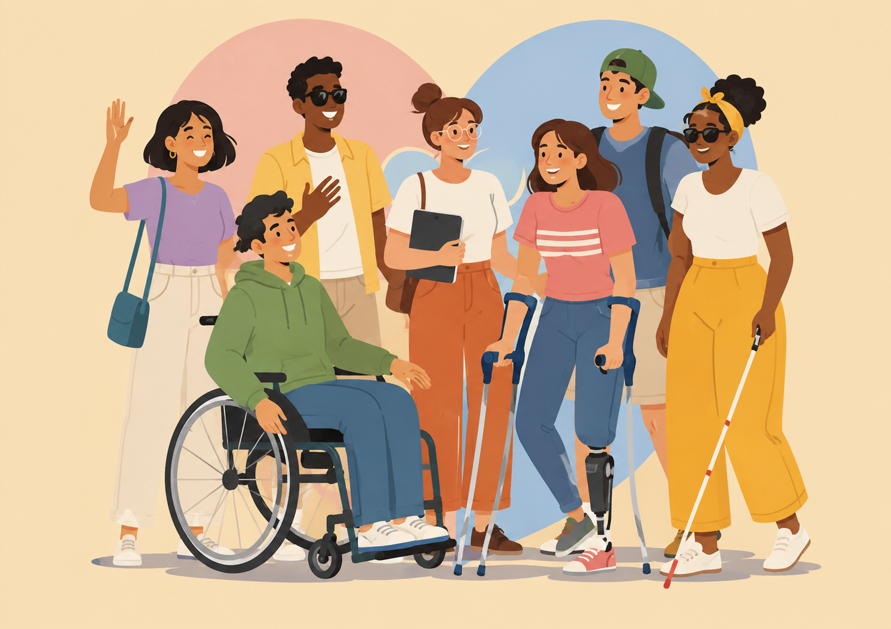

Atitudes & Linguagem
Uso de termos pejorativos, metáforas capacitistas (ex.: "fazer-se de cego"), diminutivos ou tom de voz infantilizado.
Como identificar e como combater
Conscientização e Ação Social
A inclusão plena só acontece quando desconstruímos preconceitos estruturais e eliminamos as barreiras atitudinais, físicas, comunicacionais e digitais no dia a dia.
Toda pessoa com deficiência tem direito à igualdade de oportunidades e não sofrerá nenhuma espécie de discriminação (Lei 13.146/2015).
Pena de reclusão e multa previstas no Art. 88 da LBI para quem praticar, induzir ou incitar discriminação contra pessoa por sua deficiência.
Responsabilidade coletiva. Reduzir barreiras é compromisso ético e legal de toda a sociedade.

Descrição da imagem: Ilustração colorida de pessoas diversas com e sem deficiência colaborando em comunidade.
Conceito, definição legal e formas como o preconceito se manifesta nas relações cotidianas.
O capacitismo reproduz crenças, processos e práticas que normatizam um certo padrão corporal e mental como "perfeito" ou "típico", inferiorizando ou excluindo pessoas que não se enquadram nesse padrão.
"Considera-se discriminação em razão da deficiência toda forma de distinção, restrição ou exclusão, por ação ou omissão, que tenha o propósito ou o efeito de prejudicar, impedir ou anular o reconhecimento ou o exercício dos direitos e das liberdades fundamentais..."
— Lei Brasileira de Inclusão (Lei nº 13.146/2015, Art. 4º, § 1º)
A deficiência é um produto social: ela resulta do encontro de determinados corpos ou mentes com barreiras atitudinais e ambientais que impedem sua participação plena.

Descrição da imagem: Ilustração em preto e branco mostra uma pessoa em cadeira de rodas diante da palavra gigante “NÃO”. A cena representa as barreiras e limitações impostas às pessoas com deficiência, destacando a importância da inclusão e da acessibilidade.
Uso de termos pejorativos, metáforas capacitistas (ex.: "fazer-se de cego"), diminutivos ou tom de voz infantilizado.
Falta de rampas, elevadores quebrados, calçadas esburacadas e ausência de sinalização tátil/sonora.
Sites inacessíveis para leitores de tela, vídeos sem legenda ou Libras e falta de descrições de imagens.
Pressuposição de incapacidade no trabalho, ausência de materiais em formatos acessíveis e recusa de adaptações razoáveis.
O capacitismo afeta a vida de pessoas com deficiência em múltiplos níveis sociais e individuais.
Gera exclusão, isolamento, estigmas e dificulta o estabelecimento de relações interpessoais e comunitárias em pé de igualdade.
Provoca sofrimento emocional, ansiedade e baixa autoimagem causados pela constante invalidação e pressuposição de incapacidade.
Limita o acesso, a permanência e o pleno aprendizado em instituições de ensino que recusam apoio adaptado ou Linguagem Simples.
Cria barreiras em seleções de emprego, restringe o crescimento na carreira e reforça visões assistencialistas no mercado.
Ambientes sem acessibilidade física impedem o direito fundamental de ir e vir, segregando a utilização dos espaços públicos.
Sistemas e páginas sem padrões de acessibilidade web privam o acesso à informação, serviços públicos e comunicação.

Descrição da imagem: Charge em dois quadrinhos. No primeiro, um homem em cadeira de rodas, segurando um diploma, é recebido por um funcionário que lhe oferece um trabalho na guarita do estacionamento. Ele explica que possui doutorado em Economia. No segundo, o funcionário afirma ter cumprido a lei de cotas e exige que ele demonstre sua eficiência. Enquanto outras pessoas sobem uma escada, o homem em cadeira de rodas permanece no início dela, evidenciando as barreiras físicas e sociais à inclusão..
Desconstruindo ideias equivocadas do senso comum sobre as pessoas com deficiência.

Descrição da imagem: No centro da ilustração uma mulher com deficiência física (sem os dois braços e as duas pernas) está digitando no computador com a boca. Ao lado dela duas mulheres e dois homens sem deficiência comentam: – “Incrível”; -”Parece milagre!”; -”É inacreditável o que estou vendo!”; -”Pensei que ela não seria capaz para tal tarefa!”. A mulher com deficiência pensa alto: -”Um dia eles vão se acostumar que não somos ET”.
Pessoas com deficiência são exemplos de "superação" ou "anjos inspiradores" por realizarem tarefas do dia a dia.
Pessoas com deficiência são plurais e diversas. Usá-las como inspiração apaga as violações de direitos que elas enfrentam diariamente.
Toda deficiência é aparente ou visível à primeira vista.
Existem deficiências invisíveis e neurodivergências (como autismo, deficiências auditivas ou dores crônicas). Nunca invalide a condição de alguém.
Acessibilidade é um favor, benfeitoria ou ato de caridade.
Acessibilidade e adaptações razoáveis são direitos fundamentais garantidos por legislação nacional e internacional.
É melhor falar com o acompanhante para evitar que a pessoa com deficiência não entenda.
Sempre dirija-se diretamente à pessoa com deficiência. Respeite sua autonomia e protagonismo.
Conheça a evolução das principais legislações brasileiras que protegem e garantem os direitos das pessoas com deficiência.

Descrição da imagem: Ilustração colorida mostra um grupo diverso de pessoas reunidas e sorrindo. Entre elas, há pessoas com diferentes características e deficiências, incluindo uma pessoa em cadeira de rodas, uma pessoa utilizando muletas e outra utilizando uma bengala branca. A composição transmite uma ideia de diversidade, inclusão, respeito e convivência, destacando que pessoas com diferentes características e necessidades fazem parte da sociedade.
Estabeleceu a dignidade da pessoa humana como fundamento da República e garantiu a proibição de qualquer forma de discriminação, incluindo a reserva de vagas em cargos públicos.
Dispõe sobre o apoio às pessoas com deficiência, sua integração social, e define como crime a recusa sem justa causa de inscrição escolar ou emprego por motivo de deficiência.
Obrigou empresas com 100 ou mais empregados a preencherem de 2% a 5% dos seus cargos com beneficiários reabilitados ou pessoas com deficiência habilitadas.
Estabeleceram normas gerais e critérios básicos para a promoção da acessibilidade de pessoas com deficiência ou mobilidade reduzida nas vias, edifícios e meios de transporte.
Reconheceu a Língua Brasileira de Sinais (Libras) como meio legal de comunicação e expressão, garantindo seu apoio nos serviços públicos e na educação.
Aprovada com status equivalente a Emenda Constitucional no Brasil, consolidou o Modelo Social da Deficiência internacionalmente.
Estatuto da Pessoa com Deficiência. Consolida direitos na saúde, educação, trabalho, moradia e prevê punição criminal penal para atos capacitistas de discriminação (Art. 88).
Passos e atitudes ativas para eliminar atitudes preconceituosas na sua rotina diária.
Busque referências criadas por pessoas com deficiência. Entenda a deficiência como uma característica, não um fardo ou tragédia.
Dirija sua fala à pessoa, não ao acompanhante. Não presuma incapacidades nem interrompa quem está se comunicando.
Sempre pergunte se a pessoa precisa de ajuda antes de agir. Se a oferta for recusada, respeite a decisão sem insistir.
Remova expressões como "deu mancada", "se fazer de cego" ou "dar uma de João sem braço" do seu vocabulário. Substitua por termos neutros.
Cobrem acessibilidade física nos locais que você frequenta e crie conteúdos digitais acessíveis (textos alternativos, legendas e alto contraste).
Promova o convívio, não ignore curiosidades e explique a diversidade de formas de estar no mundo sem criar estigmas.
| Evite / Inadequado ✕ | Prefira / Correto ✓ |
|---|---|
| Se fazer de surdo / cego | Parece que não ouviu / não percebeu algo |
| Deu mancada | Faltou com o compromisso / errou |
| Dar uma de João sem braço | Fugir das obrigações |
| Pessoa portadora de deficiência / especial | Pessoa com deficiência |
| Nem parece que tem deficiência | Pessoas são diversas em suas características |
Explore podcasts, vídeos e leituras complementares para continuar aprendendo sobre diversidade e anticapacitismo.
Fontes oficiais e acadêmicas utilizadas na elaboração deste material informativo.
Nota: Novos artigos, pesquisas e materiais podem ser adicionados a este acervo continuamente.